Lets Start Designing with Microsoft Blend for Visual Studio...
Blend is perfect tool to design your app. The Blend 2015 has similar look with Visual Studio 2015 and feel of more support for designers. Whatever you do with your project by staying at any of the platform, the changes will automatically synchronous across the project among these two tools. Like Visual Studio, you can also create project in Blend and start working upon it like Visual Studio and you feel exactly the home environment which you feel with Visual Studio, perhaps the main focus of Microsoft Blend is towards designing, so you will have more designer lover environment over here.
So let’s start by creating an empty project in Microsoft Blend 2015;
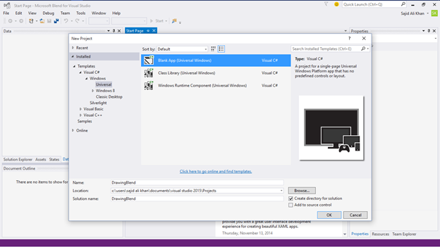
Microsoft Blend will start the project and open a great designer environment for you;
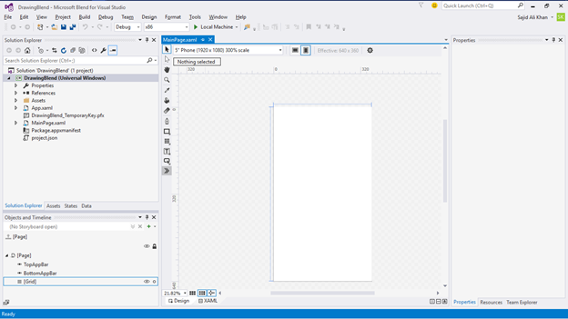
To Create some UI, you need some hands-on with Blend features;
Let’s Start one by one;
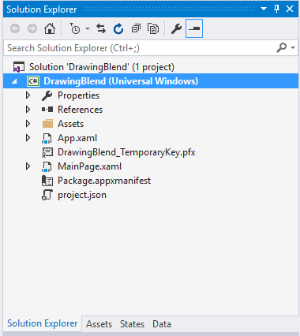
On the left top side of Blend, you can see the Solution Explorer, Assets, States and Data. This section is related to your Project. Perhaps it is also designed in such a way that help you in the design of your app…
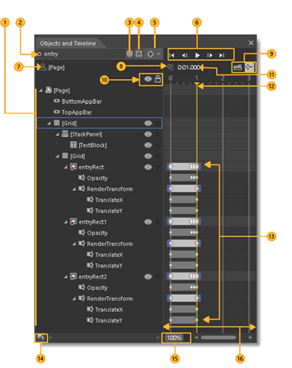
At the left bottom, you can see the section of Objects and Timeline that help you to animate your design.
Objects view: You can drill down to varying levels of detail. You can also add layers to further organize objects on the artboard. That way you can lock and hide them as a group.
Record mode indicator: That tell you whether you’re recording property changes in a timeline.
Storyboard picker: View a list of storyboards that you’ve created.
Close storyboard: Close the current storyboard.
Storyboard options: Create, duplicate, reverse, delete, rename, or close a storyboard.
Playback controls: It Navigate through the timeline. You can also drag the playhead to navigate through (or scrub) the timeline.
Return scope to: Scope the objects view back to the previous root object or previous scope. You can do this only when you’re modifying a style or template.
Record a keyframe: Record a snapshot of the properties of the selected object at the current point in time.
Snapping options: Set timeline snapping, snap resolution, and turn off timeline snapping.
Show/hide, Lock/unlock:Show or hide the visibility and locking options for the objects view.
Playhead position on the timeline: Show the current time in milliseconds. You can also enter a time value directly in this field to jump to a particular point in time. The precision depends on the snap resolution set in the Snapping Options.
Playhead: Determine what point in time the animation is at. You can drag the playhead across the timeline to preview animation.
Keyframes set on timelines: Change a property value at a specific point in time.
Change order of objects: Set the display order of objects. Click this button to arrange objects in the structure view by Z order (front-to-back) or by markup order (the order in which they appear in XAML view).
Timeline zoom: Set the zoom resolution of the timeline. Zooming in lets you edit an animation with more detail, and zooming out shows more of an overview of what is happening over longer periods of time. If you zoom in but can't set a keyframe at the position in time that you want, verify that the snap resolution is set high enough.
Timeline composition area: View the timeline, and move keyframes around by dragging them or using their shortcut menus.
On the right side of the blend, there’s the property windows that will help you to customize your stuff;
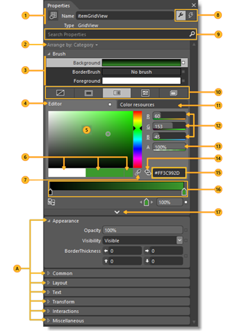
Name and Type View the icon, name and type of the selected object.
Arrange by Arrange properties alphabetically by name, source, or category.
Brush properties Set the visual properties for brushes such as Fill brush, Stroke brush, and Foreground brush.
Color editor Use for solid color and gradient brushes.
Color picker Select a color.
Color chips View the initial color, current color, and last color
Eyedroppers Use the color of any element on your screen. The Color eyedropper is available when the Solid color brush is selected. The Gradient eyedropper is available when the Gradient brush is selected.
Properties and Events Set properties or choose events for a selected element.
Search box Search for properties. Filter the properties that are displayed by typing in the Search box.
Brush editor tabs Use to select a brush editor. You can choose No brush, Solid Color brush, Gradient brush, Tile brush, or Brush resource.
Color resources Apply the exact same color to different properties. The Color Resources tab includes Local Resources and System Resources.
RGB color space Modify the color by adjusting the values for the R, G, or B (red, green, blue) number editors.
Alpha channel Modify the Alpha value by using the number editor next to A.
Convert color to resource Convert the selected color to a color resource. Color resources are available when you click the Color resources tab.
Hex value View the hexadecimal value of the color displayed.
Gradient slider Appears only if a gradient brush is selected.
Show advanced properties View categories of properties that are less commonly used.
The Asset window help you to manage your assets easily and utilize them according to need;
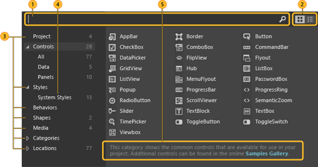
Search box Type in the Search box to filter the list of assets.
Grid mode and List mode Switch between the Grid mode view and the List mode view of assets.
Assets categories Click a category or subcategory to view the list of assets in that category.
Styles Show all the styles that are contained in the resource dictionary.
Description View a description of the selected assets category or subcategory.
The Tools Panel of the Blend is really cool, its help you to directly design your app by using helpful tools from the tools panel.
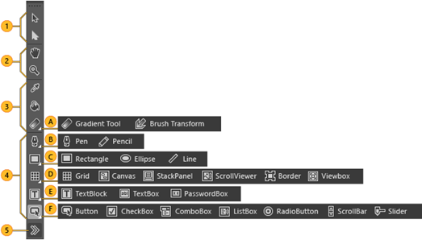
Selection tools Select objects and paths.
Use the Direct Selection tool to select nested objects and path segments.
View tools Adjust the view of the artboard, such as for panning and zooming.
Brush tools Work with the visual attributes of an object, such as transforming a brush, painting an object, or selecting the attributes of one object to apply them to another object.
Object tools Draw the most common objects on the artboard, such as paths, shapes, layout panels, text, and controls.
Asset tools Access the Assets panel and to show the most recently used asset from the library.
So now do some hands on experience by using these great features provided by Blend and see how easy is to design and develop your app in Blend 2015.
Let’s start by using Tool Panels;
On our MainPage Design Surface, lets start drawing by draw a rectangle from Tools Panel;
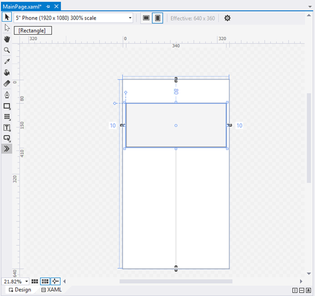
You will see, a rectangle will draw over the Design Serface...
Let’s start by hands on with Pen Tool from the Tools Panel;
Simply select the Pen Tool and click upon the Design Surface were you want your path begins from that line forward a stretch line with draw over the surface upon each click. However, if you click and drag you create a buzzy point which will create a curve over the design surface;
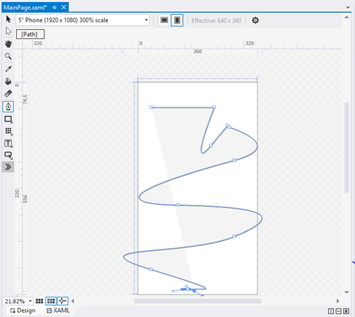
The longer you drag; the more curve you get. You can either open the path or close the path by clicking back to starting point;
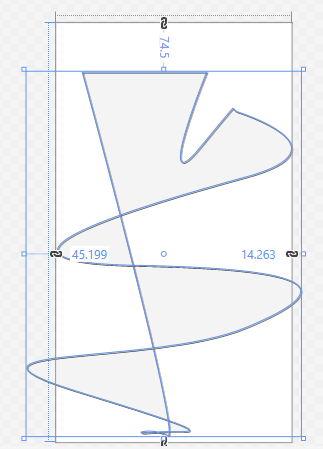
Paths can be open means that’re not a complete loop or they can be closed like here.
Further you can add or remove nodes by clicking upon the line.
The Direct Selection tool will help you to select anything from the design surface;
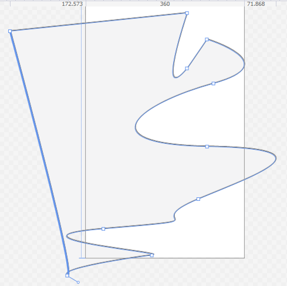
Now by simply go to properties, we can fill the shape with different colors;
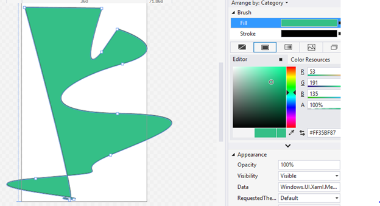
Now let’s start working with Gradients;
Let’s create a Rectangle over the Design Surface;
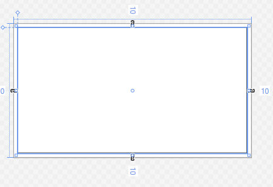
Now from the properties window, lets apply a Gradient from the brush editor;
By Default, the Gradient which we give is Black to while linear gradient as shown above, perhaps you can add additional gradient nodes by clicking upon the gradient bar;
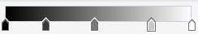
And you can change the color of the gradient as the color of the solid brush;
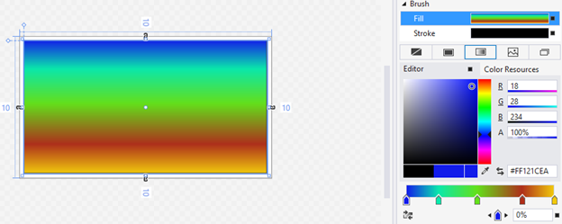
From the Gradient Tool from the tools panel, you can more customize the gradient by changes the position of head and tail;
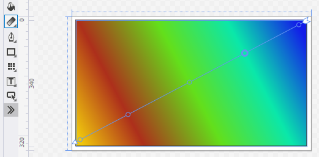
So that’s how you can play with Gradients Tool in the Blend…
So let’s play with shapes and use the Combine, Unit, Divide and Subtract operations upon it;
Simply draw two eclipse from the Tools Panel and add some Gradients to it;
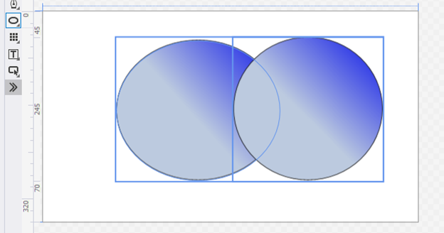
Now simply select the both objects from Object and Timeline window;
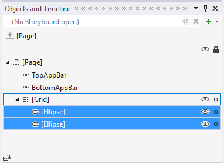
Now simply right click upon the shapes objects and go to combinations and then perform operations;
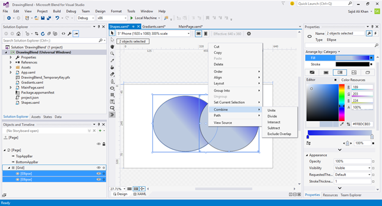
When Click upon Unit it will make the app as one unit;
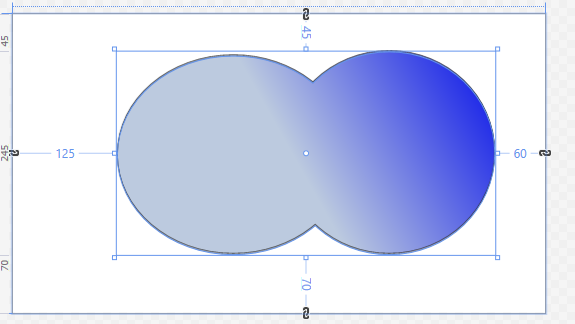
When we perform the Divide operation the it will show division b/w two shapes;
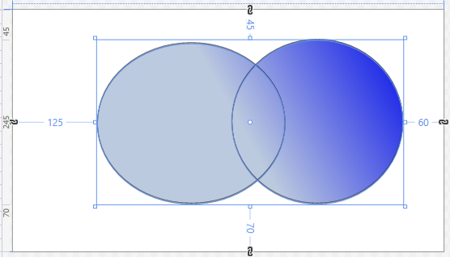
If we perform the Intersect Operation, then it will show the intersection area of both shapes;
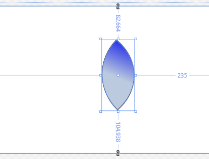
If we perform the Subtract operation, it will show the subtract view of one shape from the other;
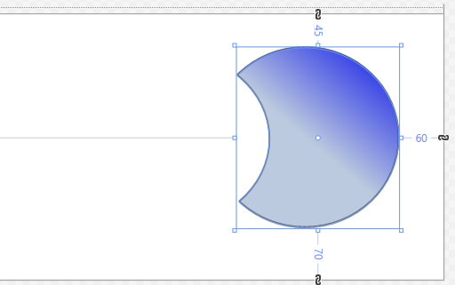
And if we perform the Exclude Overlap operation the it will exclude the overlap area of both shapes;
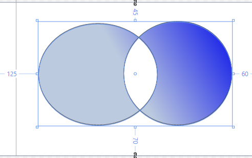
So! As you see how the magic happened in Blend by just few clicks. Designs changes very smartly and make our life easy. : - )
For Handson Demo
In order to get a best hands-on experience along with the Blog. Try out the code either By MSDN Code Samples or By GitHub..
SoftwareWarrior